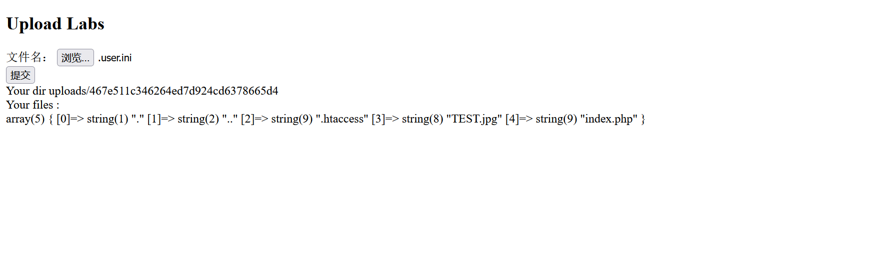

BUUCTF-Web-[SUCTF 2019]CheckIn1
本文为记录个人信安小白的刷题路程，大佬勿喷，也同时希望文章能对您有所帮助
打开靶机，是文件上传漏洞题，
上传测试文件看看文件限制，php,phtml等php文件格式都被过滤，Burp抓包修改Content-Type字段也不行，
猜测为文件头检测过滤，
上传图片木马试试，文件开头添加GIF89jpg文件头绕过，
1 | GIF89 |
上传成功，
接下来需要木马文件（TEST.jpg）被当做php文件解析执行，
上传目录配置文件.htaccess，也需要加上GIF89或GIF89ajpg文件头，
1 | GIF89 |
上传成功，
但是访问文件TEST.jpg并没有被php解析执行，可能.htaccess被过滤了
还有另一个目录配置文件.user.ini
.user.ini 是 PHP 的配置文件，它允许用户在当前目录及其子目录范围内覆盖部分 PHP 设置（类似 php.ini 的局部配置）。
构筑.user.ini文件
1 | GIF89a |
内容中的文件名需要与上传的图片马文件名保持一致。
当设置auto_prepend_file=test.jpg后，PHP会在解析任何PHP脚本之前，先加载并执行TEST.jpg文件的内容。
如果 TEST.jpg是有效的PHP代码（即使扩展名是.jpg），其中的代码会被执行。

访问上传文件路径下的index文件，
木马文件被成功解析，
连接蚁剑，
获得flag
本博客所有文章除特别声明外，均采用 CC BY-NC-SA 4.0 许可协议。转载请注明来源 半枫！